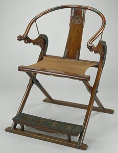

回進入頁
｜
作者介紹
｜
工作日誌
｜
相關連結
｜
網站地圖
一、由來
（一） 北宋

在中國古典傢俱中，有一種以官銜命名的傢俱，就是“太師椅”。太師椅興於北宋，以後在宋元明清的史書、名人筆記以及現今流行的幾部有影響的辭書中均有記載和描述。到底什麼樣的椅子才叫太師椅？
read more
（二） 明
“太師椅”之椅形已不是指帶荷葉托首的交椅了，而是將下部框式方座，上部安栲栳樣椅圈兒的圈椅稱為太師椅了。明沈德符《萬曆野獲編》說：“椅之有杯圈聯前者，名太師椅”。照此推論，似乎凡椅背、扶手呈圈者，皆可謂之為“太師椅”。
read more
（三） 清
“太師椅”之椅形已不是交椅和圈椅，清人李鬥《揚州畫舫錄》引《工段營造錄》說：“椅有圈椅、背靠椅、太師椅、鬼子諸式”，故把圈椅和太師椅並提。
read more
二、演變
（一） 原型
交椅是由交杌發展而來的。交杌即古代的胡床，北方人稱之“馬紮”，民間俗稱折疊凳。胡床本是一種無靠背的簡易坐具，當人們在其座屜之上增設靠背之後，它便成為一種可倚可坐的椅子。由於這種椅子的四足成對相交，故以其形名之“交椅”。
read more
（四） 結論
太師椅是古傢俱中唯一用官職來命名的椅子，它最早使用于宋代，最初的形式是一種類似於交椅的椅具。在明代時，將上部安栲栳樣椅圈兒的圈椅稱為太師椅。
read more
（二） 定型
交椅形成于宋代，流行於元明兩代。明代交椅，可分為直後背和圓後背兩種。尤其是圓後背交椅運用廣泛，多設在中堂顯著地位，顯示其尊貴而崇高的特殊身份。 圓後背交椅的結構是服從它的折疊需要而形成的。
read more
（三） 延展
在明清時代的扶手椅非常普及，明代的扶手椅人們通常泛指四出頭官帽椅和南官帽椅，它不包括同樣有扶手的寶座和玫瑰椅。清代的扶手椅人們主要是指清式傢俱中被俗稱為“太師椅”的那種重體量、重裝飾、靠背與扶手及座屜三垂直的椅子。
read more
三、太師椅報導
腰背痛 多坐太師椅
近年來，隨著生活節奏加快、電腦的普及，長時間採取坐姿的人群也不斷增加。長期伏案工作，不注意腰背部保健，日積月累會造成腰背肌勞損，而腰背痛正成為影響人們生活和工作的疾病之一。據統計，60％—80％的人在一生的不同時期都會經歷腰背痛。
read more
四、著名的景點地標「太師椅」
台南三腳南山
其特色是在左側的絕壁下有一岩石狀似太師坐的大椅
read more
高雄小崗山
展望極佳，眺望大崗山之角度真棒。途中芒果園中可望見前方一岩峰，應該是所謂的『太師椅』。
read more
新竹南園
原本創辦人王惕吾先生是要放張太師椅辦公桌在這邊，以配合此處的環境 ( 風水 )，但因為太師椅的格局太小 ( 一張桌椅放在一座山上，你自己想看看就知道囉 )，所以最後直接將南樓設計為椅子，這樣氣勢就磅礴多囉。
read more
太師椅的介紹
Grandfather Chair
匠師介紹
Master Introduction
講師專欄
Lecturer Column
製作過程
Production Process
工具及材料介紹
Tools And Materials
太師椅
| Copyright© 2010 Mr.Clarence. All Rights Reserved. |
回上一頁
建議解析度 1024 x 768 | 瀏覽器 Chrome 5.0 |
使用說明
太師椅的介紹
一、由來
（一） 北宋
（二） 明
（三） 清
▲顯示全部
二、演變
（一） 原型
（二）定型
（三） 延展
（四）結論
▲顯示全部
三、太師椅報導
腰背痛 多坐太師椅
▲顯示全部
四、著名的景點地標「太師椅」
台南三腳南山
高雄小崗山
新竹南園
▲顯示全部
五、異國風情
國外的太師椅思維
▲顯示全部
六、不變的真理
太師椅的擺設
▲顯示全部
▲顯示全部
匠師介紹
林崑山工匠－老匠師
匠師訪問
匠師作品
林義祥工匠－傳承人
傳承人訪問
匠師作品
▲顯示全部
講師專欄
王肇楠講師
講師訪問
講師作品
▲顯示全部
製作過程
製作過程
製作過程
▲顯示全部
工具及材料介紹
工具介紹
手工具的種類
尺的種類&規格
榫卯藝術
▲顯示全部
材料介紹
木材種類
漆的種類
吉祥含意
▲顯示全部
▲顯示全部
作者介紹
工作日誌
相關連結
網站地圖
使用說明
 交椅形成于宋代，流行於元明兩代。明代交椅，可分為直後背和圓後背兩種。尤其是圓後背交椅運用廣泛，多設在中堂顯著地位，顯示其尊貴而崇高的特殊身份。
圓後背交椅的結構是服從它的折疊需要而形成的。
交椅形成于宋代，流行於元明兩代。明代交椅，可分為直後背和圓後背兩種。尤其是圓後背交椅運用廣泛，多設在中堂顯著地位，顯示其尊貴而崇高的特殊身份。
圓後背交椅的結構是服從它的折疊需要而形成的。 近年來，隨著生活節奏加快、電腦的普及，長時間採取坐姿的人群也不斷增加。長期伏案工作，不注意腰背部保健，日積月累會造成腰背肌勞損，而腰背痛正成為影響人們生活和工作的疾病之一。據統計，60％—80％的人在一生的不同時期都會經歷腰背痛。
近年來，隨著生活節奏加快、電腦的普及，長時間採取坐姿的人群也不斷增加。長期伏案工作，不注意腰背部保健，日積月累會造成腰背肌勞損，而腰背痛正成為影響人們生活和工作的疾病之一。據統計，60％—80％的人在一生的不同時期都會經歷腰背痛。